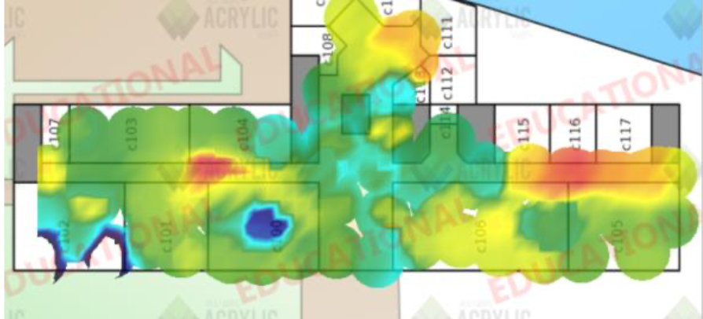

SAÉ 1.03 - Découvrir un dispositif de transmission
Semestre 1 · Cisco Packet Tracer · Acrylic Wi-Fi

Projet d’analyse et de planification Wi‑Fi : mesures de couverture, création de heatmaps et simulation de déploiement pour optimiser la couverture.
En bref :
Mesures terrain et simulations pour proposer un plan de déploiement adapté aux contraintes physiques.
Objectif
Analyser la couverture Wi‑Fi, produire des heatmaps et déterminer des recommandations d’emplacement et de configuration des AP.
Architecture réalisée
- Mesures de puissance et analyse de perte de signal
- Génération de heatmaps pour visualiser la couverture
- Simulation sur Packet Tracer et configuration centralisée
- Tests de performance et recommandations opérationnelles
Compétences développées
Planification Wi‑Fi, interprétation de heatmaps, tests de couverture et configuration centralisée des points d’accès.
Acquis d'apprentissage
- AC12.01 — Mesurer et analyser les signaux de transmission
- AC12.03 — Déployer et configurer les supports de transmission
- AC11.01 — Appliquer les lois fondamentales de l'électricité aux équipements réseau
Technologies utilisées
- Cisco Packet Tracer
- Acrylic Wi-Fi
- Heatmap
- Wi-Fi entreprise
- Simulation réseau